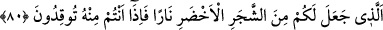
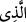

1- “İnsan ölüp yok olunca ortada bir şey kalmaz. Öyleyse olmayan şeyin varlığına
hükmetmek nasıl doğru olur?”
Allah Teâlâ bu şüpheye şöyle buyurarak cevap vermiştir: “De ki: Onları ilk defa
yaratmış olan diriltecek.” Yani insan hiç anılan bir şey değilken Allah onu nasıl
yarattıysa, yine ortada anılan bir şey kalmasa da yeniden yaratacaktır.
2- “Bedenin cüzleri dünyanın doğusuna batısına dağılan, bir kısmı yırtıcı hayvanların
bedenlerine, bir kısmı kuşların kursaklarına, bir kısmı evlerin duvarlarına giden kişinin
bedeni nasıl bir araya toplanacaktır? Bundan da zoru bir insan diğer bir insanı yese,
yenilenin cüzleri yiyenin cüzlerine dahil olsa, yiyenin cüzleri yeniden yaratıldığında
yenilenin uzuvlarını oluşturacak cüzler kalmaz. Şayet yenilen insanın cüzleri onun
bedenine iâde edilse ve yenilen kendi cüzleriyle yeniden yaratılsa yiyeni yaratmak için
cüzler kalmaz.”
Allah Teâlâ bu şüpheye de şöyle buyurarak ortadan kaldırmıştır: “Çünkü O, her türlü
yaratmayı gayet iyi bilir.”
Bu şüphe şöyle izâle edilebilir: Yiyen insanın aslî cüzleri ve fazladan cüzleri vardır.
Yenilen insanda da durum aynıdır. Bir insan diğer bir insanı yediği zaman yenilen
insanın aslî cüzleri yiyen insana göre fazladan cüzlerdir. Yiyen insanın aslî cüzleri -ki
bunlar diğer insanı yemeden önceki cüzlerdir- işte yiyen insanla beraber toplanıp iâde
edilecek/yeniden yaratılacak olan cüzler bunlardır. Yenilen cüzler ise yenilen insanla
beraber toplanıp yeniden yaratılacaktır. “Çünkü Allah, her türlü yaratmayı gayet iyi
bilir.” Aslî cüzleri de fazladan olan cüzleri de bilir. Böylece yiyenin aslî cüzlerini de
yenilenin aslî cüzlerini de bir araya getirir ve ona ruh üfürür. Yine uzak bölgelerde
darmadağın olan cüzleri de hikmeti ve kudretiyle toplar.
Bazı fazilet ehli der ki: Yeniden diriltilmeyi inkar edenlerin kemiklerin çürümüş
olmasına sarılmaları iki yöndendir: Birincisi, bedenin cüzleriyle organların cüzlerinin
birbirine karışmasıdır. Öyleyse bir bedenin cüzleri diğer bedenin cüzlerinden, bir uzvun
cüzleri başka bir uzvun cüzlerinden nasıl ayrılacaktır ki yeniden yaratılma tasavvur
edilebilsin? İkincisi, çürümüş olan cüzler çok kurudur. Halbuki hayat bedenin rutûbetini
gerektirir.
Allah Teâlâ birincisinin cevâbına “Çünkü O, her türlü yaratmayı gayet iyi bilir.”
buyurarak işâret etmiştir. Dolayısıyla bedenlerin cüzleriyle uzuvların cüzlerini ayırmak
O’nun için mümkündür. İkincisinin cevabına ise şu âyet ile işâret etmiştir:
80. Yeşil ağaçtan sizin için ateş çıkaran O’dur. İşte siz ateşi ondan yakıyorsunuz.
“Yeşil ağaçtan sizin için ateş çıkaran O’dur.”
Buradaki ism-i mevsûl (
) kelimesi önceki ayetteki ism-i mevsûlden bedeldir. Onun